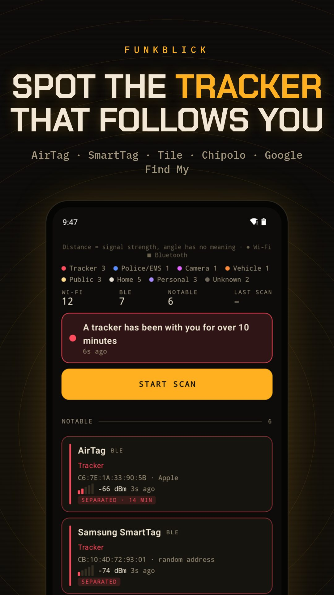

WI-FI · BLUETOOTH · ANDROID
Hidden cameras in your Airbnb?
Funkblick is a hidden camera detector app and hidden camera finder for your phone. Many cheap spy cameras open their own Wi-Fi so the owner can set them up, and many security cameras come from a handful of makers. Funkblick checks both: camera makers from the IEEE registry and Wi-Fi names cameras typically use, and warns as soon as one shows up.
Download the APKSource on GitHub
Free, Android 8.0 or newer, runs on GrapheneOS without Google services. No account. The app fetches its own updates from GitHub.

Check a room in five minutes
- Start the scan in the flat and leave it running for two minutes.
- List → filter Camera. Pink entries are camera makers (Hikvision, Dahua, EZVIZ, Ring, Arlo …) or Wi-Fi names cameras use in setup mode (V380, IPC, LookCam …).
- Walk through the rooms. The strongest signal is usually the closest device.
- Also look with your eyes: smoke detectors, chargers and clocks facing the bed or shower.
What Funkblick can't do
- No direction. A phone only measures how strong a signal is. The angle on the radar is a fixed spot per device, not a compass.
- Access points only. Android lists Wi-Fi routers and hotspots, not devices that are merely connected. A camera on someone's home network stays invisible.
- No police radio. Police and EMS talk over TETRA or P25, which no phone can receive. Funkblick only sees the Wi-Fi and Bluetooth of their gear, if it has any.
- Random addresses. Phones and trackers change their Bluetooth address. Funkblick then reads what the device broadcasts instead of guessing the maker.
Questions
Which hidden camera detector, Android or iPhone?
Funkblick runs on Android only, because iPhones don't let apps scan Wi-Fi. As a hidden camera detector, Android phones can see every access point in range.
Can a phone find every hidden camera?
No. It finds cameras that open their own Wi-Fi or send Bluetooth. A camera that is only connected to the host's Wi-Fi is invisible to any app, because Android only lists access points.
Why not use the infrared trick?
Pointing the camera at lenses to spot IR LEDs works only for cameras with night vision on. Do it as well; Funkblick covers the radio side.
Is a Hikvision network always a camera?
Not always, but the maker builds almost nothing else. Funkblick shows why it flagged something, so you can judge.